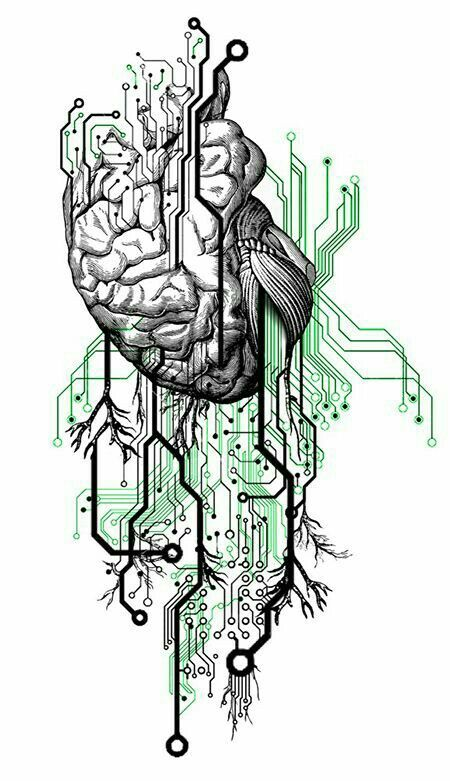

Biomedical engineering in Bangladesh is a rapidly growing field that intersects engineering principles with healthcare to improve medical diagnosis, treatment, and patient care. The discipline encompasses a wide range of applications, including medical device development, bioinformatics, imaging technologies, and rehabilitation engineering. Despite facing challenges such as limited resources and infrastructure, Bangladesh has made significant strides in advancing biomedical engineering.
One key aspect of biomedical engineering in Bangladesh is the development of affordable medical devices tailored to the needs of the local population. This includes devices like low-cost prosthetics, portable diagnostic tools, and telemedicine solutions, which can significantly improve healthcare access, especially in rural areas where resources are scarce. Collaborations between engineers, healthcare professionals, and researchers have been instrumental in driving innovation in this area.
Another important focus is on biomedical research, with institutions and universities increasingly investing in research initiatives to address prevalent health issues in Bangladesh. This research spans areas such as infectious diseases, maternal and child health, and non-communicable diseases prevalent in the region. By leveraging interdisciplinary approaches, researchers aim to develop effective solutions that can have a meaningful impact on public health outcomes.
Additionally, the education and training landscape for biomedical engineering in Bangladesh is evolving, with more institutions offering specialized programs and courses in the field. This not only helps to meet the growing demand for skilled professionals but also fosters a culture of innovation and entrepreneurship. Graduates in biomedical engineering are equipped with the knowledge and skills to contribute to both academia and industry, driving further advancements in healthcare technology.
Despite these advancements, challenges remain, including the need for more investment in infrastructure, research funding, and regulatory frameworks. Addressing these challenges will be crucial in sustaining the growth of biomedical engineering in Bangladesh and ensuring that it continues to make significant contributions to improving healthcare outcomes for its population.
| ID | Name | CGPA |
|---|---|---|
| 2029038 | Fahmida | 3.39 |
| 2029040 | Jasy | 3.25 |
| 2029042 | Nafeesa | 3.40 |
developed by © Anika